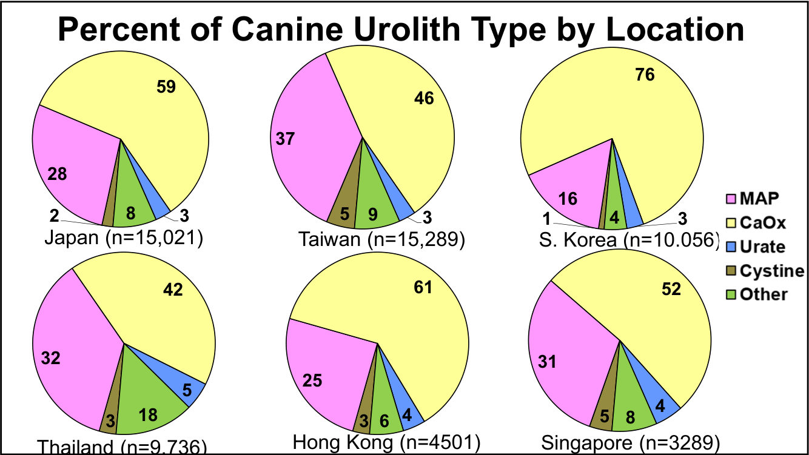
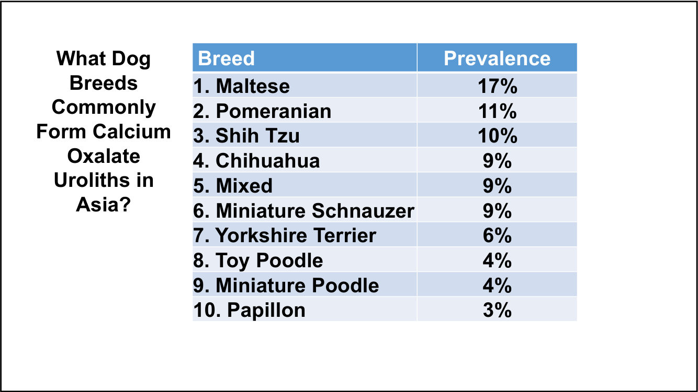
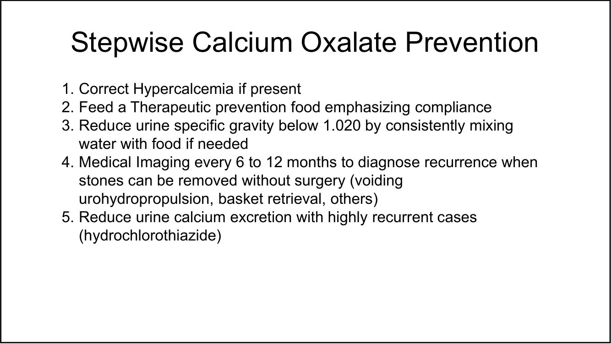
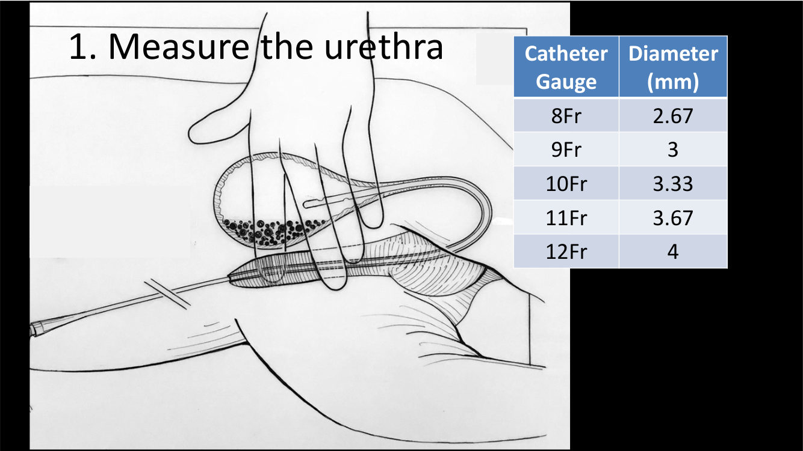
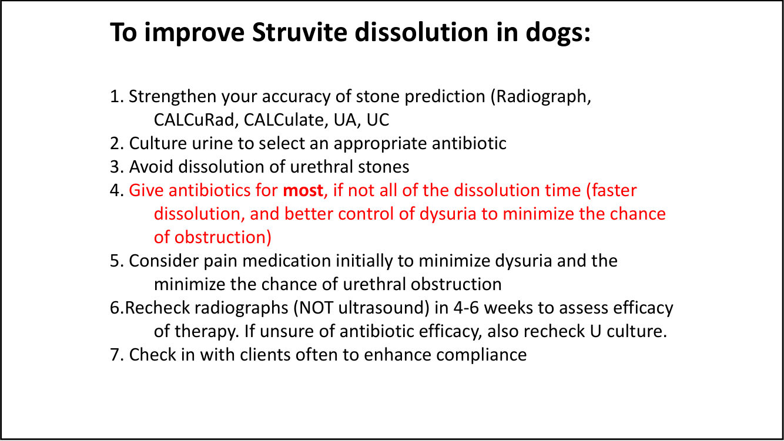
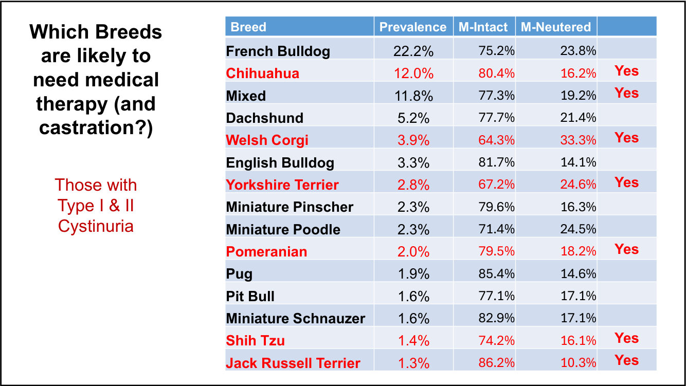
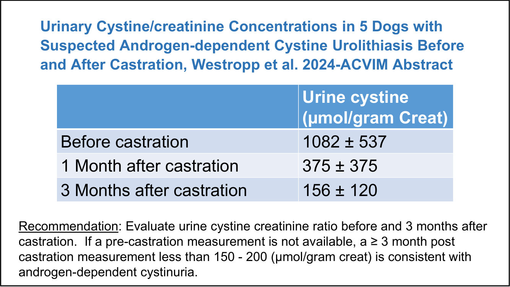
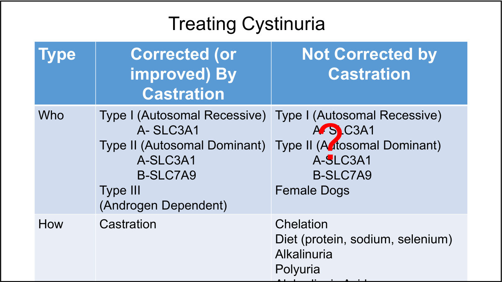
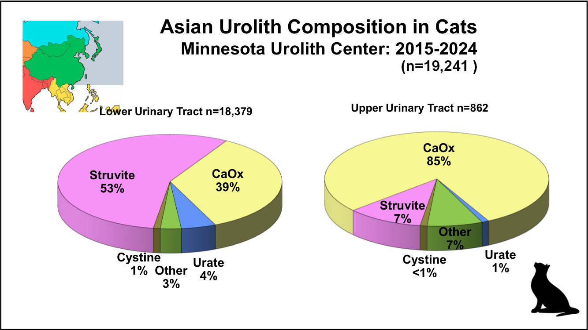
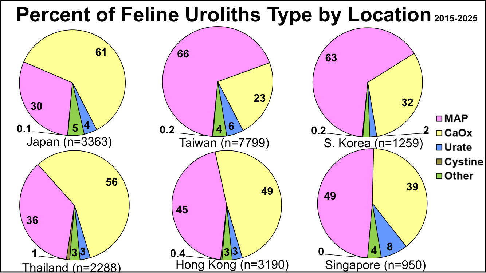

亞洲犬貓尿結石：MUC 2015–2025 資料與處置
主講：Jody Lulich, DVM, PhD, DACVIM（University of Minnesota／Minnesota Urolith Center）
2026-10-18 講座｜Advanced Insights in Asia’s Dogs and Cats with Uroliths（講義 55 頁，每頁 2 張投影片）｜場次 03
目前只有講義，沒有課堂錄音；講義上的影片與現場討論無法收錄。若之後有錄音，會再合併講者的口頭說明。
⭐ 必記原則
- MUC 2015–2025 亞洲狗結石 n = 64,801：草酸鈣 54%、鳥糞石 31%、尿酸鹽 4%、胱胺酸 4%
- 台灣狗（n = 15,289）：草酸鈣 46%、鳥糞石 37%、胱胺酸 5%；台灣貓（n = 7799）：鳥糞石 66%、草酸鈣 23%
- 最大威脅＝草酸鈣；新興威脅＝胱胺酸（2% → 6%）；最大機會＝鳥糞石（可溶解）
- 草酸鈣預防五步：矯正高血鈣 → 處方食品 → USG < 1.020 → 每 6–12 個月影像（小顆時不用開刀就能移除） → 高復發用 hydrochlorothiazide
- 感染性鳥糞石：抗生素要給到大部分甚至整個溶解期；4–6 週用 X 光（不是超音波）追蹤；不要溶解尿道結石
- 胱胺酸結石 99% 是公狗、多數未去勢；去勢即使在 Type I／II 品種也可能有幫助；去勢 3 個月後尿胱胺酸／肌酸酐 < 150–200 µmol/g 符合雄性素依賴型
- 亞洲貓 n = 21,237：鳥糞石 51%、草酸鈣 40%；上泌尿道結石 85% 是草酸鈣
- 貓鳥糞石溶解快：Louie 用 c/d multicare 14 天內溶解
亞洲狗的結石成分（Minnesota Urolith Center）
▾2015–2025（n = 64,801）
| 成分 | 比例 |
|---|---|
| 草酸鈣（CaOx） | 54% |
| 鳥糞石（MAP） | 31% |
| 尿酸鹽 | 4% |
| 胱胺酸 | 4% |
| 其他 | 7%（磷酸鈣 0.8%、矽酸鹽 0.8%、黃嘌呤 0.3%） |
下泌尿道 vs 上泌尿道（2015–2024）
| CaOx | 鳥糞石 | 尿酸鹽 | 胱胺酸 | 其他 | |
|---|---|---|---|---|---|
| 下泌尿道（n = 59,495） | 53% | 31% | 4% | 2% | 13% |
| 上泌尿道（n = 2176） | 62% | 19% |
各國狗的結石成分（%）
| CaOx | MAP | 尿酸鹽 | 胱胺酸 | 其他 | |
|---|---|---|---|---|---|
| 日本（n = 15,021） | 59 | 28 | 3 | 2 | 8 |
| 台灣（n = 15,289） | 46 | 37 | 3 | 5 | 9 |
| 南韓（n = 10,056） | 76 | 16 | 3 | 1 | 4 |
| 泰國（n = 9736） | 42 | 32 | 5 | 3 | 18 |
| 香港（n = 4501） | 61 | 25 | 4 | 3 | 6 |
| 新加坡（n = 3289） | 52 | 31 | 4 | 5 | 8 |

💡 補充 台灣狗的鳥糞石比例在六個地區中最高（37%），胱胺酸也和新加坡並列最高（5%）。
2015–2025 的趨勢
- 最大威脅：草酸鈣（比例最高且持續）
- 新興威脅：胱胺酸，從 2% 升到 6%
- 最大的成功機會：鳥糞石（可以溶解）
1. 狗的草酸鈣結石
▾誰會長？
草酸鈣 n = 34,670，共 168 個品種。公狗 80%、母狗 19%。
| 排名 | 品種 | 比例 |
|---|---|---|
| 1 | 馬爾濟斯 | 17% |
| 2 | 博美 | 11% |
| 3 | 西施 | 10% |
| 4 | 吉娃娃 | 9% |
| 5 | 米克斯 | 9% |
| 6 | 迷你雪納瑞 | 9% |
| 7 | 約克夏 | 6% |
| 8 | 玩具貴賓 | 4% |
| 9 | 迷你貴賓 | 4% |
| 10 | 蝴蝶犬 | 3% |

草酸鈣的逐步預防
- 有高血鈣就先矯正
- 餵預防用處方食品，重點在配合度
- 讓USG 降到 1.020 以下：需要時持續在食物裡加水
- 每 6–12 個月影像檢查，在結石還小、不用開刀就能移除時發現復發（排尿式尿水推進、網籃取石等）
- 高度復發的病例：降低尿鈣排出（hydrochlorothiazide）

2. 排尿式尿水推進（Voiding urohydropropulsion）五步驟
▾五步驟
- 測量結石與尿道
- 麻醉病患（O’Hearn, JVECC 2011;21(1):50-52）
- 用液體充滿膀胱
- 把病患抬起來（直立，講義強調姿勢很重要）
- 擠壓膀胱
量尿道：導管 Fr 對應直徑
| 導管 | 直徑（mm） |
|---|---|
| 8 Fr | 2.67 |
| 9 Fr | 3 |
| 10 Fr | 3.33 |
| 11 Fr | 3.67 |
| 12 Fr | 4 |

病例 Teddy：結石約 2 mm； 排出的結石 100% 是單水草酸鈣。
💡 補充 Fr 數 ÷ 3 ＝ 直徑（mm）。結石要比尿道最窄處小，才適合用這個方法。
3. 狗的鳥糞石：溶解與抗生素
▾誰會長？
鳥糞石 n = 19,879，51 個品種：米克斯 15.1%、西施 12.9%、迷你雪納瑞 7.8%、迷你貴賓 5.9%、臘腸 4.9%、博美 4.7%、柯基 4.6%、馬爾濟斯 4.5%、玩具貴賓 4.3%、吉娃娃 4.1%。
2019 共識的一句話與病例 Heidi
講義引用 2019 ISCAID 細菌性泌尿道感染共識：「溶解期間不需要全程給抗菌藥」。講者認為：狗鳥糞石溶解或預防有困難，比較可能不是食物的問題，而是這個共識的誤導。
- Heidi，3 歲已結紮母西施：fluoroquinolone 10 天＋溶解食品 3 個月
- 治療 1 個月時血尿復發 → amoxicillin 10 天，繼續溶解食品
- 3 個月、兩次 10 天抗生素後，結石仍在（電子顯微鏡可見結石內部有細菌）
- 改成 amoxicillin＋c/d 持續給：第 30 天、第 70 天逐漸溶解
改善狗鳥糞石溶解的七點
- 提高結石成分預測的準確度（X 光、CALCuRad、CALCulate、尿液分析、尿液培養）
- 培養尿液以選擇適當抗生素
- 不要溶解尿道結石
- 大部分甚至全部溶解期間都給抗生素（溶解更快，也更能控制排尿困難、降低阻塞機會）
- 一開始考慮給止痛，減少排尿困難與尿道阻塞機會
- 4–6 週用 X 光（不是超音波）複查療效；不確定抗生素有沒有效時也複查尿液培養
- 常和飼主聯絡，提高配合度

隨堂問答
| 問題 | 選項 |
|---|---|
| 抗生素要給多久？ | A. 10–14 天 B. 直到結石溶解（講義標示 B） |
| 什麼時候複查？ | A. 新抗生素治療 3–5 天 B. 最後一劑抗生素後 C. 4 週後 D. 病患惡化時（講義標示 C；病例在第 45 天複查） |
感染性鳥糞石要注意的四件事
- 抗生素要給大部分甚至整個溶解期；結石沒溶解時，一定要培養尿液找原因
- 結石表面加了碳酸磷酸鈣（> 10–20%）或其他不能溶解的礦物，會阻礙溶解
- 大顆結石 4 週的 X 光可能只看到密度下降；超音波無法比較，只能輔助
- 產尿素酶細菌（如葡萄球菌、Proteus）的無症狀感染復發也要治療
💡 補充 抗生素選擇與療程的一般原則見 知菌知藥 Part 1。
4. 狗的胱胺酸結石與去勢
▾胱胺酸結石怎麼形成？
| 型別 | 基因 | 遺傳 |
|---|---|---|
| Type I | SLC3A1 | 體染色體隱性 |
| Type II | SLC3A1、SLC7A9 | 體染色體顯性 |
| Type III | — | 雄性素依賴 |
近端腎小管的轉運蛋白（rBAT／SLC3A1、b0,+AT／SLC7A9）無法再吸收胱胺酸，尿中胱胺酸過多而形成結石。表面有粗糙與光滑兩種型態。
怎麼診斷胱胺酸尿？
- 胱胺酸結晶尿
- 硝普鈉試驗（nitroprusside）
- 尿胱胺酸／肌酸酐比 > 175–200 µmol/g 肌酸酐
誰會長？
n = 2335；母狗只有 18 隻（9 隻已結紮）、公狗 2103 隻（只有 437 隻已去勢）。共 96 個品種。
去勢能矯正亞洲狗的胱胺酸尿嗎？
| 品種 | 比例 | 未去勢公狗 | 已知有 Type I／II 變異 |
|---|---|---|---|
| 法國鬥牛犬 | 22.2% | 75.2% | 是 |
| 吉娃娃 | 12.0% | 80.4% | 是 |
| 米克斯 | 11.8% | 77.3% | |
| 臘腸 | 5.2% | 77.7% | 是 |
| 柯基 | 3.9% | 64.3% | |
| 英國鬥牛犬 | 3.3% | 81.7% | 是 |
| 約克夏 | 2.8% | 67.2% | |
| 迷你品 | 2.3% | 79.6% | |
| 迷你貴賓 | 2.3% | 71.4% | 是 |
| 博美 | 2.0% | 79.5% | |
| 巴哥 | 1.9% | 85.4% | |
| 比特 | 1.6% | 77.1% | |
| 迷你雪納瑞 | 1.6% | 82.9% | 是 |
| 西施 | 1.4% | 74.2% | 是 |
| 傑克羅素 | 1.3% | 86.2% |

💡 補充 講義表格的「M-Neutered／M-Intact」兩欄加起來接近 100%，這裡只列未去勢公狗的比例。
結論
- 雄性素和其他睪丸產物在許多品種的胱胺酸結石形成中扮演重要角色
- 去勢可能降低胱胺酸結石復發風險，即使是有 Type I、II 基因變異的品種
- 品種不能可靠預測胱胺酸尿的型別或對去勢的反應
- 建議做基因檢測與尿胱胺酸定量，評估個別狗去勢後復發的風險
（小鼠中 AGT1／SLC7A13 只在雄性表現；在狗的角色還不清楚，PNAS。）
去勢前後的尿胱胺酸（Westropp et al. 2024 ACVIM 摘要，5 隻狗）
| 時間 | 尿胱胺酸（µmol/g 肌酸酐） |
|---|---|
| 去勢前 | 1082 ± 537 |
| 去勢後 1 個月 | 375 ± 375 |
| 去勢後 3 個月 | 156 ± 120 |

胱胺酸尿的治療
| 對象 | 治療 |
|---|---|
| Type I（隱性，SLC3A1）、Type II（顯性，SLC3A1／SLC7A9）、母狗 | 螯合、飲食（蛋白質、鈉、硒）、鹼化尿液、多尿、α-lipoic acid |
| Type III（雄性素依賴） | 去勢 |
螯合：tiopronin 15–20 mg/kg q12h 或 D-penicillamine 15 mg/kg q12h（把胱胺酸拆成可溶的雙硫化物）。
飲食目標：降低動物性蛋白質、減鈉、降低 USG、鹼化尿液（Hill’s u/d、Royal Canin UC）；u/d 讓 24 小時尿胱胺酸減少 20–25%，加 tiopronin 有 50% 完全溶解（Osborne, Vet Clin North Am 1999;29:193）。胱胺酸溶解度在尿 pH 升高時大幅增加。

什麼時候去勢？
講義比較未去勢與已去勢公狗的胱胺酸結石年齡分布，並以一隻狗的 X 光說明「小事情」（小結石）的重要。
5. 亞洲貓的結石
▾矽酸鹽結石在哪裡最多？
| 地區 | 數量 | 佔所有結石 |
|---|---|---|
| 亞洲 | 0.8% | |
| 香港 | 27 | 0.6% |
| 日本 | 309 | 2.1% |
| 新加坡 | 21 | 0.6% |
| 南韓 | 6 | 0.05% |
| 台灣 | 40 | 0.3% |
| 泰國 | 69 | 0.7% |
亞洲貓的結石成分（2015–2025，n = 21,237）
| 成分 | 比例 |
|---|---|
| 鳥糞石（MAP） | 51%（n = 10,784） |
| 草酸鈣 | 40%（n = 8590） |
| 尿酸鹽 | 5% |
| 胱胺酸 | < 1% |
| 其他 | 3%（磷酸鈣 0.7%、黃嘌呤 0.2%） |
| 鳥糞石 | 草酸鈣 | |
|---|---|---|
| 下泌尿道（n = 18,379） | 53% | 39% |
| 上泌尿道（n = 862） | 7% | 85% |

各國貓的結石成分（%）
| MAP | CaOx | 尿酸鹽 | 胱胺酸 | 其他 | |
|---|---|---|---|---|---|
| 日本（n = 3363） | 30 | 61 | 4 | 0.1 | 5 |
| 台灣（n = 7799） | 66 | 23 | 6 | 0.2 | 4 |
| 南韓（n = 1259） | 63 | 32 | 2 | 0.2 | |
| 泰國（n = 2288） | 36 | 56 | 3 | 1 | 3 |
| 香港（n = 3190） | 45 | 49 | 3 | 0.4 | 3 |
| 新加坡（n = 950） | 49 | 39 | 8 | 0 | 4 |

💡 補充 台灣貓的鳥糞石比例（66%）是六個地區最高，代表多數台灣貓的結石有機會用食物溶解，先溶解再考慮手術。
貓的鳥糞石：品種與病例 Louie
鳥糞石 n = 10,784，公 53%、母 47%；米克斯 43%、DSH 20.1%、英短 5.2%、摺耳 4.0%、波斯 4.0%、美短 3.0%、金吉拉 1.8%、俄羅斯藍貓 1.4%、挪威森林貓 1.2%。
- Louie，5 歲已去勢公貓 DSH：亂尿尿
- 尿液：自然排尿、USG 1.059、pH 6.28、RBC 5–20/hpf、WBC 0、無結晶、無細菌、培養陰性
- 「你會溶解 Louie 的鳥糞石嗎？」c/d multicare：第 7 天變小、第 14 天溶解
💡 補充 沒有結晶也沒有感染，仍然是鳥糞石，而且兩週就溶解；貓的鳥糞石多半是無菌性的，和狗的感染性鳥糞石不同。
「我們打贏了戰役，但還沒贏得戰爭」
草酸鈣：41%（n = 8590），公 53%、母 47%；品種：米克斯 21.1%、DSH 17.0%、英短 11.1%、摺耳 10.2%、波斯 8.4%、美短 6.7%、曼赤肯 3.1%、異國短毛 2.8%、金吉拉 2.0%。
尿酸鹽：4%（n = 980），公 53%、母 47%；米克斯 46.4%、DSH 25.8%、英短 4.3%、波斯 2.3%、美短 1.8%、布偶 1.6%。